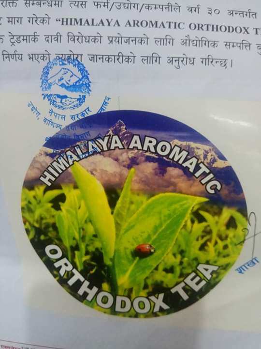
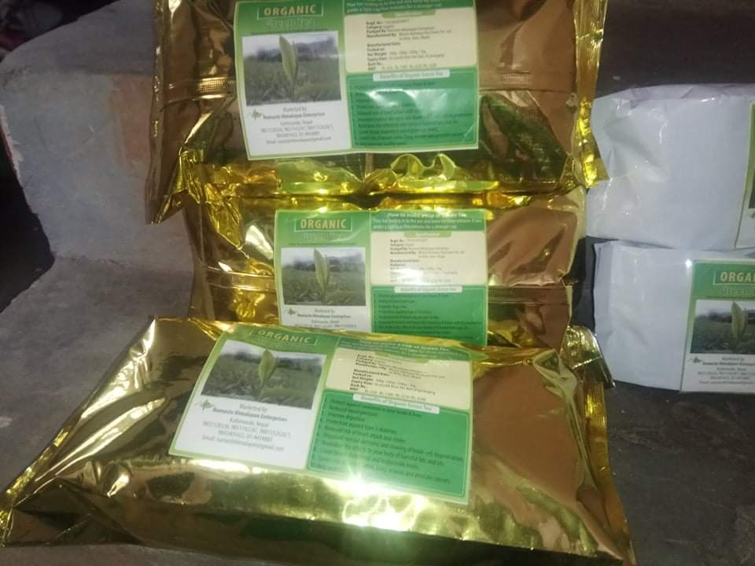

The acronym of HAOT is Himalayan Aromatic Arthodox Tea.It was established in 2015 under the compacy act of Nepal Government. Our main motto is to provide the original taste of
organic green tea to connoisseur of green and orthodox tea.We are working with HAOT brand and our main slogan is
"Where there is tea there is hope..take original taste of Ilam Organic Tea"
Its main factory is located in Suryodaya municipiality Fikkal,Ilam,Nepal.
We are very much careful and serious abot the health of our consumers.We are collecting the finished organic tea product form our factory,packaging and
shipping from our branch office Bhaktapur
and distributing from our four outlets in Japan.
There are various green tea made products that we are supplying in the markets.
We are categorizing our products under
three main group, those are products specially targeted for man's use,Womens use and chield use.
